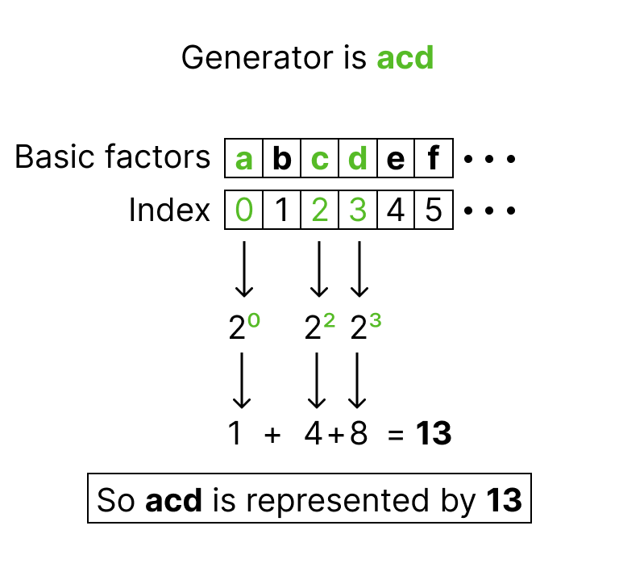

Factors#
Two-level factors#
Basic factors#
A two-level factor with \(N\) runs has \(k=log_2(N)\) basic factors. These factors specify all the treatment combinations of a \(2^k\) full factorial design.
Added factors#
Assuming that the factor levels are -1 and +1, additional factors are generated as products of the basic factors. These factors are called added factors. If we represent the basic factors with individual lowercase letters starting with \(a\), then a product of basic factors can be written by combining the letters of the basic factors. Such products are called generators.
For example, a factor created as the product of the first, third and fourth basic factors would have \(acd\) as generator.
Generators as numbers#
When a large number of basic factors is involved, the letter notation of the generators can be cumbersome. The solution is to store them as numbers instead of words. Since every number can be uniquely decomposed into powers of 2, each generator can be associated with a combination of powers of 2. To do this, each basic factor is uniquely assigned to a specific power of 2.
For example, \(a\) is represented by 1, \(b\) by 2, and \(c\) by 4. The sum of these powers creates the number defining the generator. The figure below show that process for the generator \(acd\) .
{kind=link}
In the fatld package, the function fatld.relation.gen2num() can be used to generate the number corresponding to a generator.
Inversely, the function fatld.relation.num2gen() can be used to generate the generator corresponding to a column number.
>>> from fatld.relation import num2gen, gen2num
>>> column = 23
>>> num2gen(column)
abce
>>> gen2num('abce')
23
Four-level factors#
Four-level factors are are represented by uppercase letters, and constructed from pairs of two-level factors using the grouping scheme of Wu and Zhang [1] In this scheme, the four levels of a factor are created from the combination of the levels of two two-level factors as shown in the table below. The two two-level factors and their interaction are called pseudo-factors and are represented as \(A_1\), \(A_2\), and \(A_3\).
In this package, four-level factors are always created from pairs of basic factors. Therefore, the pseudo-factors used to generate the four-level factors are always defined in the same way:
Factor \(A\) with pseudo-factors \((a, b, ab)\) or column numbers (1, 2, 3)
Factor \(B\) with pseudo-factors \((c, d, cd)\) or column numbers (4, 8, 12)
Factor \(C\) with pseudo-factors \((e, f, ef)\) or column numbers (16, 32, 48)
Since some two-level factors are used as pseudo-factors, some generators need to be relabeled to represent that.
For example, in a design with one four-level factor defined as \(\mathbf{A} =(A_1=a, A_2=b, A_3=ab)\), the generator \(abce\) would be relabeled to \(A_3ce\).
The function fatld.relation.relabel_word() can be used to relabel a generator, given the number of four-level factors that are considered.
>>> from fatld.relation import relabel_word
>>> new_word = relabel_word(word='abce', m=1)
>>> new_word
A3ce
Words#
Added factors are also represented by lowercase letters. The combination of the generator used to create a added factor and the letter representing it is called a word. Words have two important properties:
length: the number of factors present in the word
type: the number of pseudo-factors, coming from different four-level factors, present in the word
For example, in a 32-run design, there are \(log_2(32)=5\) basic factors \((a,b,c,d,e)\). If we consider the added factor \(f\), with generator \(abcde\), then the word representing that factor is \(abcdef\). This word has length 6 and type 0 since it contains no pseudo-factors.
Length#
The length of a word can be computed using the function fatld.relation.word_length().
This function works for words containing only two-level factors and words containing pseudo-factors.
>>> from fatld.relation import word_length
>>> word_length('abcdef')
6
>>> word_length('A1cdg')
4
Type#
The type of a word can be computed using the function fatld.relation.word_type().
This function works for words containing only two-level factors and words containing pseudo-factors.
>>> from fatld.relation import word_type
>>> word_type('abcef')
0
>>> word_type('A1cdg')
1
>>> word_type(relabel_word('acdeg', m=2)) # relabeled word is A1C3eg
2
Defining relation#
The aliasing pattern of a design can be summarized by a defining relation that contains all the words associated with the added factors of the design. Defining relations have two interesting features:
Expansion: expand the relation containing p words to the full defining relation containing \(2^{p}-1\) words.
Word length pattern: compute the word length pattern of the design based on the full defining relation.
For example, consider the 128-run design with two four-level factors, \(A\) and \(B\), and four added two-level factors: 21, 42, 103, and 121.
Since the design involves 128 runs, there are 7 basic factors (a to g), so that the four added factors are labeled h, i, j, and k.
Using the four generators and the four labels, we can create the defining relation of the design using the fatld.relation.Relation class that create a Relation object, which holds a defining relation.
>>> from fatld.relation import Relation
>>> added_factors = [21, 42, 103, 121]
>>> letters = [chr(97+7+i) for i in range(4)]
>>> subgroup = [f"{num2gen(x)}{letters[i]}" for i,x in enumerate(added_factors)]
>>> subgroup
['aceh', 'bdfi', 'abcfgj', 'adefgk']
>>> r = Relation(subgroup, m=2)
>>> r
['A1B1eh', 'A2B2fi', 'A3B1fgj', 'A1B2efgk']
This class has two methods fatld.relation.Relation.expand() and fatld.relation.Relation.word_length_pattern() that allow you to expand the defining relation, and to compute its word length pattern, respectively.
>>> full_relation = r.expand(relabel=True)
>>> full_relation
['A1B1eh', 'A2B2fi', 'A3B1fgj', 'A1B2efgk', 'A3B3efhi', 'A2efghj', 'B3fghk', 'A1B3gij', 'A3egik', 'A2B3ejk', 'B2eghij', 'A2B1ghik', 'A3B2hjk', 'B1efijk', 'A1fhijk']
>>> [word_length(w) for w in full_relation]
[4, 4, 5, 6, 6, 6, 5, 5, 5, 5, 6, 6, 5, 6, 6]
>>> [word_type(w) for w in full_relation]
[2, 2, 2, 2, 2, 1, 1, 2, 1, 2, 1, 2, 2, 1, 1]
>>> r.word_length_pattern()
[[0, 0, 0], [0, 0, 2], [0, 2, 4], [0, 4, 3]]